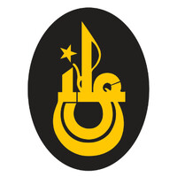

Computer Science, M.Sc.
04/2024 – 08/2026
Technische Universität Berlin · Berlin, Germany
Thesis conducted in partnership with DFKI (Deutsches Forschungszentrum für Künstliche Intelligenz).
Science of Intelligence Master Track · Berlin University Alliance. Specialization in ML, neuroscience, and privacy-preserving AI.
Thesis: Towards Efficient Text Anonymization — Differential Privacy and Re-Identification Risk-based Explainability.
Deep Learning
Machine Intelligence I & II
Automatic Image Analysis
Causal Inference
NLP in Humans & Machines
Computer Science, B.Sc.
11/2020 – 07/2024
Technische Universität Berlin · Berlin, Germany
Theory-intensive curriculum with AI/ML electives. Final grade: 2.0 (1.9 preliminary).
Thesis (1.3): AlphaZero gegen MCTS — Eine Studie zur KI-basierten Spielstrategie in Gomoku.
Analysis & Linear Algebra
Stochastics
Algorithms & Data Structures
Discrete Structures
High School (Abitur)
09/2015 – 06/2020

Istanbul Erkek Lisesi · Istanbul, Türkiye
Gymnasium with full German-language curriculum. Graduated with German university entrance qualification.